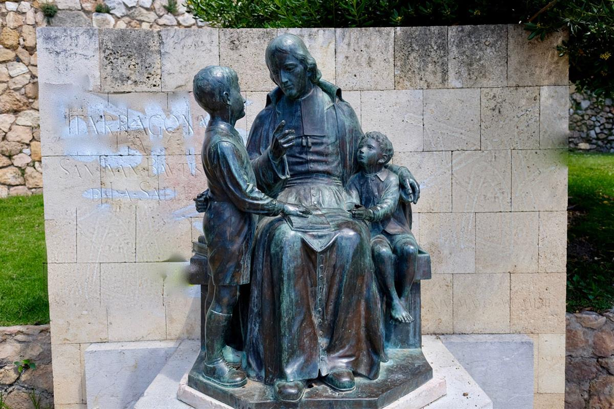

History
St. Gerald, also known as Gerald of Mayo, was in fact an Englishman who became a monk under St. Colman of Lindisfarne in the 7th century. Colman founded a monastery of mixed nationalities on Inisboffin. Following a disagreement, the English monks transferred to the mainland and founded Mayo Abbey, which as a result was often referred to as “Mayo of the Saxons”. St. Gerald became Abbot, probably the first, of this foundation. He died in 727 and his feast day is March 13th.
St John Bapiste De La Salle
The De La Salle Brothers were founded in Rheims, France, by St. John Baptist De La Salle in the middle of the 17th century to provide free education for the children of the poor. They quickly spread throughout France and to other countries. St. Gerald’s College is a voluntary Catholic Secondary school established to provide secondary level education for boys from Castlebar and the surrounding areas. The college is under the trusteeship of the Le Chéile Schools Trust. The brothers came to Castlebar in 1888 and opened St. Patrick’s National School to 189 pupils at Chapel Street. This was the Orders’ fourth establishment in Ireland, being preceded only by Castletown, Co. Laois, Kildare town and Waterford city, in that order.
St. Gerald’s DLS College was opened in 1909. Twenty-four boys were enroled in that first year. The original college was in what is now St. Gerald’s Parish Centre, Chapel Street. In September 1971, the present college on Newport Road opened under the headmastership of Br. Vincent Hanley. The recent extension was opened in September 1999. There are over 600 boys in the college at present. The first lay Principal of the College was appointed in 2000.